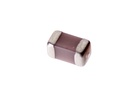

SMD (0603) 8.2 pF Capacitor (Ceramic) - C6P008
Summary
Name: SMD (0603) 8.2 pF Capacitor (Ceramic)
ID: CAPC-0603-X-PF82D-01
Hex ID: C6P008
WebPage: https://github.com/oomlout/oomlout-OOMP/wiki/CAPC-0603-X-PF82D-01
Short URL: http://oom.lt/C6P008
Revision History: https://github.com/oomlout/oomlout-OOMP/blob/master/parts/CAPC-0603-X-PF82D-01/
| Type |
Size |
Color |
Description |
Index |
CAPC
Capacitor (Ceramic) |
0603
SMD (0603) |
X
|
PF82D
8.2 pF |
01
|
Images

About
This part is awaiting a description.
Specifications
| Info |
Value |
| Type |
Capacitor (Ceramic) |
| Size |
SMD (0603) |
| Description |
8.2 pF |
| Width |
0.8 |
| Length |
1.6 |
| Number of Pins |
2 |
Extra Details
Spotted a mistake, want to add more? Let us know oomp@oomlout.com
All images and resources are licensed [CC BY-SA] unless otherwise stated (ie. the datasheets)